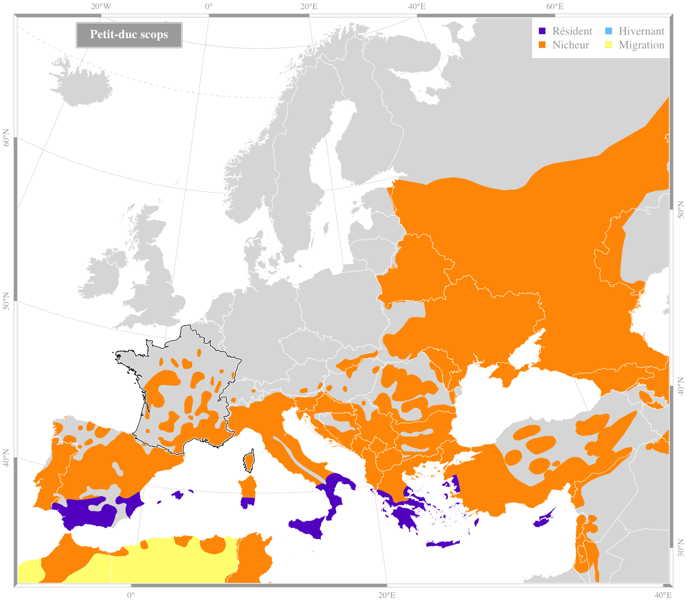

Crédit : biodivlibrary |
Petit-duc scopsOtus scops (Linnaeus, 1758)Ordre : Strigiformes - Famille : Strigidae
Envergure : 53-63 cm Longueur : 19-20 cm Alimentation : insectes, rongeurs, grenouilles Habitat : moitié sud du pays, milieux boisés |
|||||
Répartition en France
Espèce migratrice : oui |

Source des données : Bird Life International |